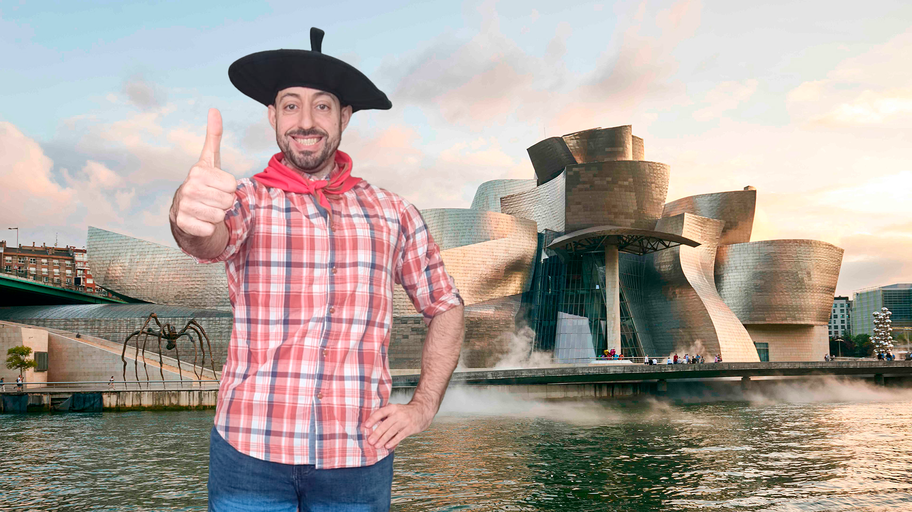

No seas tramposa, tienes que contestar a todas las preguntas si quieres el premio.
Desde Lozano Experience queremos acompañarte en este día tan especial. Sabemos lo que te encanta jugar y por eso te proponemos este reto. Si lo superas, ¡puede que te aguarde algún premio!
Para poder ganar la recompensa deberás acertar TODAS las preguntas.
¡Suerte!
1. ¿Cuál es la mejor casa de Hogwarts?
2. ¿Cuál es la canción favorita de tu novio?
3. ¿Cuántos Legos más caben en casa?
4. ¿Qué temperatura hacía en el concierto de Grande Amore?
5. ¿Cuál es tu pueblo favorito de Burgos?
6. Completa la frase: Te miro y no te…
7. ¿Cuál es la capital de Tuvalu?
8. Adivina el país
9. Adivina el Wheretaken
10. ¿Cuál es el camino más corto entre Chad y Mozambique?
Ahí va la hostia, qué manera de acertar pues!
Has ganado un fin de semana en Bilbao y alrededores para que puedas disfrutar de su turismo y sobre todo del pintxopote!
